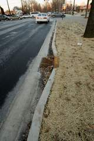
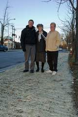
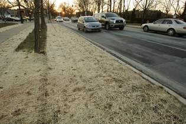
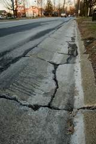

Standing along a curb recently installed
on Eastern Parkway were Mike Zanone,
vice president of the St. Joseph Area
Association; member Ruth Gerlach, center;
and President Gail Linville.

Standing along a curb recently installed on Eastern Parkway were
Mike Zanone, vice president of the St. Joseph Area Association;
member Ruth Gerlach, center; and President Gail Linville.

Grass has also been planted between the sidewalks
and Eastern Parkway. (Photos by David Harpe, Special to The
Courier-Journal)
The old curbs like this one were too shallow to allow rain to run
off properly -- and they were crumbling and ugly.

An effort begun four years ago by St. Joseph to get new curbs along
Eastern Parkway has finally paid off.
New curbs have been installed near Preston and Shelby streets.
"We had to talk to all sorts of agencies to get it done," said Gail
Linville, president of the St. Joseph Area Association. "It took
awhile to get going."
Residents said the old curbs were crumbling and too shallow for good
drainage.
Helping with the project was Metro Council President Jim King, whose
District 10 includes the area. Neighbors got his attention by asking
one simple question: "Eastern Parkway and Bardstown Road look nice.
Why not Eastern Parkway and Preston?" said Ruth Gerlach, a longtime
association activist.
"That got his attention real quick," Linville said. King agreed.
Linville, Gerlach and Mike Zanone, the St. Joseph association's vice
president, led the residents' effort, and King coordinated the
agencies: Louisville Metro Works and Parks departments, the Transit
Authority of River City, the Olmsted Conservancy and the
Metropolitan Sewer District.
New box curbs have replaced crumbling shallow curbs along Eastern
Parkway from about 100 feet west of Preston to the entrances to the
Walgreens drugstore and Shoney's restaurant east of Shelby Sidewalks
also were improved.
The project cost $160,000, including landscaping, bus shelters and
benches that will be installed. King and TARC provided $65,000 each,
and MSD $30,000.
King said the new curbs could set a standard for improvements along
all of Eastern Parkway.
With the old curbs, rain water often pooled along Eastern Parkway,
especially in front of the White Castle and Radio Shack, Linville
said. Now water drains quickly. "The new curbs look a lot better
too," she said.
King said the improved sidewalks will be especially helpful to
residents of Lourdes Hall, a retirement home on Eastern Parkway near
Preston.
The project wasn't part of beautification efforts along Preston
between the Watterson Expressway and Eastern Parkway. But the two
projects eventually could join. Preston corridor improvements
between Hess Lane and Eastern Parkway could begin in a year and
further help the appearance of the Eastern Parkway-Preston Street
corner.
That sounds good to Gerlach, a neighborhood resident for 80 years
who worked as a teenager in a Walgreens that used to be on the
corner.
"This corner and this part of town have been neglected," she said.
"This corner used to be very nice. I hope it can be nice again."
Reporter Bill Pike can be reached at (502) 582-4243